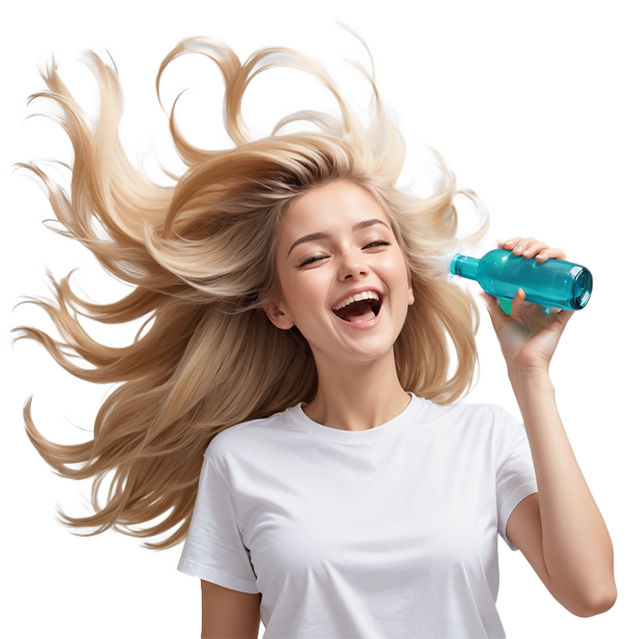

Hair Healthy
Let Hay Make Your Hair Sway!

Let Hay Make Your Hair Sway!
Hay merupakan aplikasi komprehensif dan inovatif yang membantu pengguna mengatasi masalah perawatan rambut yang umum terjadi seperti rambut rontok, ketombe, masalah kulit kepala, dan pertumbuhan rambut yang lambat.
Hay menggunakan teknologi klasifikasi gambar untuk mengidentifikasi tanda-tanda penyakit rambut dan masalah kulit kepala, yang memungkinkan Hay dapat menawarkan rekomendasi yang disesuaikan untuk produk kesehatan rambut dan kulit kepala yang sesuai.
Dengan menggabungkan teknologi, informasi, dan produk berkualitas, Hay bisa menjadi pilihan dalam meningkatkan kualitas hidup dan kepercayaan diri pengguna melalui perawatan rambut yang efektif dan tepat sasaran. Hay lebih dari sekedar aplikasi, Hay adalah mitra dalam perjalanan pengguna menuju rambut yang sehat dan indah.
Diagnosa permasalahan rambut anda
Memberikan hasil rekomendasi perawatan rambut anda dengan menerapkan 4 pilar kesehatan
Hay menyediakan konsultasi langsung dengan Hair Spesialist dan Dermatologist
Hay helps in maintaining the health of your hair


explore hay-pedia to get educated about your hair health
Pria juga memiliki kekhawatiran tersendiri atas penampilannya. Hampir separuh dari pria di Indonesia merasa tidak percaya diri atau insecure dengan kulit wajah mereka saat ini. Sebanyak 42 persen pria merasa memiliki kulit yang kusam, sedangkan 37 persen merasa memiliki pori-pori wajah yang besar.
Namun, berbeda dengan wanita, mayoritas pria Indonesia merasa belum mengalami tanda-tanda penuaan. Karena biasanya, pria justru merasa semakin merasa tampan ketika semakin bertambah usia lantaran sudah merasa mapan, sehingga bisa berpenampilan baik atau well dreesed.
Cara merawat rambut sehat dan berkilau tidak dapat diperoleh hanya dengan keramas. Ada beragam cara merawat rambut yang dapat Anda coba lakukan. Bahkan, beberapa cara tersebut bisa dilakukan sendiri di rumah.
Beberapa metode penataan rambut justru bisa membuat rambut menjadi kering, rontok, atau bercabang. Selain itu, paparan sinar matahari dan polusi juga bisa memperburuk kerusakan rambut. Oleh karena itu, diperlukan perawatan yang tepat agar rambut tetap sehat dan tampak indah.
Rambut berfungsi sebagai perlindungan alami bagi kulit kepala terhadap sinar UV. Namun rambut yang rusak atau tipis mungkin tidak memberikan perlindungan yang cukup, sehingga penting untuk menjaga kesehatan rambut ahar dapat memberikan perlindungan yang maksimal.
Memiliki rambut yang sehat dan terawat dapat meningkatkan penampilan secara keseluruhan. Rambut yang indah dan sehat adalah idaman semua orang khususnya kaum perempuan. Kondisi rambut dapat menjadi indikator kesehatan secara keseluruhan.